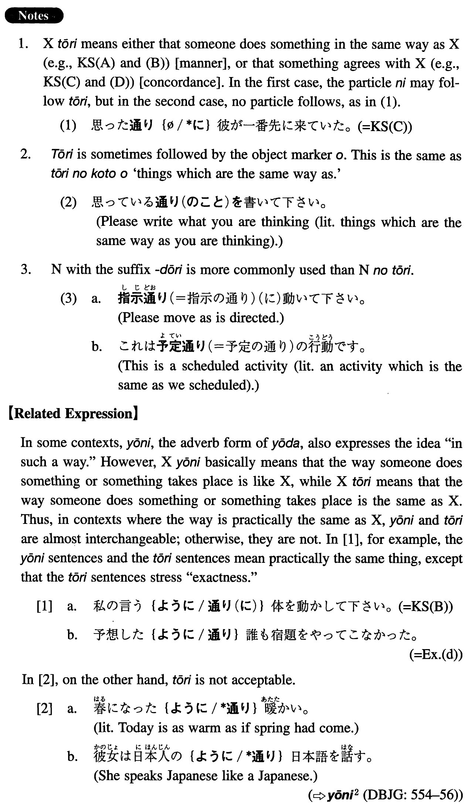

←
DoJG
→
通り（に）
(I. 514)
Example sentences
(ksa).
説明書の
通り（に）
やったが、うまくいかなかった。
I did it as the manual shows (literally: in the same way as the manual), but it didn't work.
(ksb).
私の言う
通り（に）
体を動かして下さい。
Please move your body as I tell you to (literally: in the same way as I tell you).
(ksc).
思った
通り
彼が一番先に来ていた。
As I expected (literally: thought), he was the first to come.
(ksd).
結果はやはり予想した
通り
だった。
The result was just as I expected, after all.
(a).
この地図の
通り（に）
行けば間違いなく行けます。
If you go as this map shows (literally: in the same way as this map), you can get there without fail.
(b).
私はただ言われた
通り（に）
やっているだけです。
I'm just doing as I'm told (literally: in the way I'm told).
(c).
ここに書いてある
通り（に）
すれば誰にでも出来ます。
If you follow what is (literally: do it in the way) written here, anyone can do it.
(d).
予想した
通り
誰も宿題をやってこなかった。
As I expected, no one did their homework.
(e).
心配していた
通り
ペンキが足りなくなった。
As I feared, I ran out of paint.
(f).
内容はこの間説明した
通り
です。
The content is the same as I explained to you the other day.
(g).
これは私が考えていた
通り
のデザインです。
This is the same design as the one I have thought about.
(h).
A：これは何語か分かりますか。B: アラビア語です。A: はい、その
通り
です。
A: Do you know what language this is? B: It's Arabic. A: That's right (literally: the same as you said).
Formation
(i)
Noun
の通り(に)
計画
の通り(に)
The same way as the plan
(ii)
Vinformal
通り(に)
見た
通り(に)
The way someone saw something
(iii)
Demonstrative Adjective
通り(に)
この
通り(に)
The same way as this; this way
